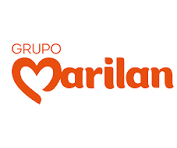
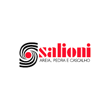

UMA ORGANIZAÇÃO MOTIVADA PELA VONTADE DE AJUDAR O PRÓXIMO

Sobre a AMAPON


A AMAPON, A Associação Marilense de Apoio ao Paciente Oncológico (AMAPOM) é uma instituição sem fins lucrativos fundada em 28 de julho de 2023, com o propósito de oferecer acolhimento e suporte integral a pacientes em tratamento contra o câncer e a seus familiares. Nossa missão é promover qualidade de vida, bem-estar e dignidade durante o processo de enfrentamento da doença, por meio de uma rede de cuidados humanizados e solidários. Entre os serviços prestados, destacam-se o apoio nutricional, com acompanhamento e orientações para uma alimentação equilibrada; pernoite, garantindo hospedagem segura e confortável para pacientes e acompanhantes; suporte psicológico, visando o fortalecimento emocional; além de atividades relaxantes e apoio médico especializado. A AMAPOM atua em benefício das cidades que integram o Departamento Regional de Saúde (DRS), ampliando o acesso aos cuidados e fortalecendo os vínculos entre pacientes, famílias e profissionais da área da saúde. Nosso trabalho é movido pela empatia, solidariedade e compromisso em oferecer esperança e amparo a quem mais precisa.
Conheça nossos projetos


Notícias e Divulgações
Amigos do Bar": construção da casa de apoio entra na reta final
11/08/2025 - Ver mais...
ONG AMAPON VAI AJUDAR PACIENTES COM CÂNCER
04/12/2023 - Ver mais...
Solenidade marca lançamento da pedra fundamental da Amapon
25/11/2023 - Ver mais...
APOIE E AJUDE
Quer ajudar na qualidade de vida dessas pessoas? Seja solidário também!
Doando de qualquer uma das formas acima você estará ajudando diversos setores da AMAPON!
Conheça quem tornou este sonho realidade:
Nossos patrocinadores:


Venha visitar a AMAPON de Marília!
Localização: Avenida Ferez Mattar, 475, no bairro Fragata C, em Marília